<title>GB Fixit Wix Build Guide</title>
<meta name="claude:viewport-fit-sides" content="cover">
<link rel="preconnect" href="https://fonts.googleapis.com">
<link href="https://fonts.googleapis.com/css2?family=Barlow+Semi+Condensed:wght@700;800&family=Barlow:wght@400;500;600;700&family=JetBrains+Mono:wght@400;500&display=swap" rel="stylesheet">
<style>
/* Layout: one reading column of numbered build steps; each section card pairs a screenshot with its Wix settings. */
:root {
  --bg: #F6F8FA; --surface: #FFFFFF; --fg: #0E2436; --muted: #4A5562; --line: #DCE5EE;
  --accent: #0E4D82; --accent-soft: #EEF4FA; --mark: #FFDE11; --code-bg: #EEF4FA;
  --display: "Barlow Semi Condensed", "Barlow", "Arial Narrow", sans-serif;
  --body: "Barlow", system-ui, sans-serif;
  --mono: "JetBrains Mono", ui-monospace, Menlo, monospace;
}
@media (prefers-color-scheme: dark) { :root:not([data-theme="light"]) {
  --bg: #0B1622; --surface: #102131; --fg: #E6EDF4; --muted: #A9BED2; --line: #22384D;
  --accent: #7FB2E5; --accent-soft: #15293C; --code-bg: #15293C; color-scheme: dark } }
:root[data-theme="dark"] {
  --bg: #0B1622; --surface: #102131; --fg: #E6EDF4; --muted: #A9BED2; --line: #22384D;
  --accent: #7FB2E5; --accent-soft: #15293C; --code-bg: #15293C; color-scheme: dark }

* { box-sizing: border-box; }
body { background: var(--bg); color: var(--fg); font: 17px/1.6 var(--body); }
a { color: var(--accent); }
:focus-visible { outline: 3px solid var(--mark); outline-offset: 2px; }
.page { max-width: 1040px; margin: 0 auto; padding-left: max(16px, env(safe-area-inset-left, 0px)); padding-right: max(16px, env(safe-area-inset-right, 0px)); padding-block: 40px 80px; }
h1, h2, h3 { font-family: var(--display); text-transform: uppercase; letter-spacing: .02em; line-height: 1.05; margin: 0; text-wrap: balance; }
h1 { font-size: clamp(40px, 6vw, 64px); font-weight: 800; color: var(--accent); }
h2 { font-size: clamp(28px, 4vw, 38px); font-weight: 800; color: var(--accent); }
h3 { font-size: 22px; font-weight: 700; }
p { margin: 0; }
.lede { font-size: 19px; color: var(--muted); max-width: 64ch; margin-top: 14px; }
.meta { display: flex; flex-wrap: wrap; gap: 8px 18px; margin-top: 18px; font-size: 14px; color: var(--muted); }
.meta b { color: var(--fg); }
.label { font-family: var(--mono); font-size: 12px; text-transform: uppercase; letter-spacing: .08em; color: var(--muted); }

.toc { margin-top: 28px; display: grid; grid-template-columns: repeat(auto-fit, minmax(220px, 1fr)); gap: 8px; }
.toc a { display: flex; gap: 10px; align-items: baseline; padding: 10px 14px; background: var(--surface); border: 1px solid var(--line); border-radius: 8px; text-decoration: none; color: var(--fg); font-weight: 600; font-size: 15px; }
.toc a span { font-family: var(--mono); font-size: 12px; color: var(--accent); }
.toc a:hover { border-color: var(--accent); }

.step { margin-top: 56px; }
.step > header { display: flex; align-items: baseline; gap: 14px; padding-bottom: 12px; border-bottom: 2px solid var(--accent); margin-bottom: 22px; }
.step > header .n { font-family: var(--display); font-weight: 800; font-size: 40px; line-height: 1; color: var(--mark); -webkit-text-stroke: 1.5px var(--accent); }
.step > p { max-width: 70ch; color: var(--muted); }

.callout { margin-top: 16px; padding: 14px 18px; border-radius: 8px; background: var(--accent-soft); border: 1px solid var(--line); font-size: 16px; }
.callout b { color: var(--fg); }

ol.do, ul.do { margin: 14px 0 0; padding-left: 22px; display: grid; gap: 8px; }
ol.do li::marker { font-weight: 700; color: var(--accent); }

.swatches { display: grid; grid-template-columns: repeat(auto-fit, minmax(170px, 1fr)); gap: 12px; margin-top: 8px; }
.sw { background: var(--surface); border: 1px solid var(--line); border-radius: 10px; overflow: hidden; }
.sw i { display: block; height: 64px; }
.sw div { padding: 10px 12px; font-size: 14px; }
.sw b { display: block; font-size: 15px; }
.sw code { font-family: var(--mono); font-size: 13px; }

.table-wrap { overflow-x: auto; margin-top: 8px; border: 1px solid var(--line); border-radius: 10px; background: var(--surface); }
table { border-collapse: collapse; width: 100%; min-width: 620px; font-size: 15px; }
th, td { text-align: left; padding: 10px 14px; border-bottom: 1px solid var(--line); vertical-align: top; }
th { font-family: var(--mono); font-size: 12px; text-transform: uppercase; letter-spacing: .06em; color: var(--muted); font-weight: 500; background: var(--accent-soft); }
tr:last-child td { border-bottom: 0; }
td code, li code, p code { font-family: var(--mono); font-size: 13px; background: var(--code-bg); padding: 1px 6px; border-radius: 4px; }

.sec { margin-top: 26px; background: var(--surface); border: 1px solid var(--line); border-radius: 12px; overflow: hidden; }
.sec-head { display: flex; flex-wrap: wrap; justify-content: space-between; align-items: baseline; gap: 6px 16px; padding: 16px 20px; border-bottom: 1px solid var(--line); }
.sec-head h3 { color: var(--accent); }
.sec-head .label { white-space: nowrap; }
.shot { background: #0E2436; padding: 12px; }
.shot img { display: block; width: 100%; height: auto; border-radius: 4px; }
.sec-body { display: grid; grid-template-columns: 1fr 1fr; gap: 0; }
.sec-body > div { padding: 18px 20px; min-width: 0; }
.sec-body > div + div { border-left: 1px solid var(--line); }
.sec-body h4 { margin: 0 0 8px; font-family: var(--mono); font-size: 12px; text-transform: uppercase; letter-spacing: .08em; color: var(--muted); font-weight: 500; }
.sec-body ul { margin: 0; padding-left: 18px; display: grid; gap: 6px; font-size: 15.5px; }
.sec-body .mob { margin-top: 14px; font-size: 15px; color: var(--muted); }
.sec-body .mob b { color: var(--fg); }

.copy { position: relative; margin-top: 10px; background: var(--code-bg); border: 1px solid var(--line); border-radius: 8px; padding: 12px 14px 12px; font-size: 15px; }
.copy + .copy { margin-top: 8px; }
.copy .k { display: block; font-family: var(--mono); font-size: 11px; text-transform: uppercase; letter-spacing: .08em; color: var(--muted); margin-bottom: 2px; padding-right: 64px; }
.copy .t { white-space: pre-wrap; overflow-wrap: anywhere; }
.copy button { position: absolute; top: 8px; right: 8px; font: 600 12px var(--body); text-transform: uppercase; letter-spacing: .06em; padding: 5px 10px; border-radius: 6px; border: 1px solid var(--line); background: var(--surface); color: var(--fg); cursor: pointer; min-height: 28px; }
.copy button:hover { border-color: var(--accent); }

.check { list-style: none; padding: 0; margin: 12px 0 0; display: grid; gap: 8px; }
.check label { display: flex; gap: 12px; align-items: flex-start; padding: 12px 14px; background: var(--surface); border: 1px solid var(--line); border-radius: 8px; cursor: pointer; }
.check input { width: 18px; height: 18px; margin-top: 4px; accent-color: var(--accent); flex: 0 0 18px; }
.check input:checked + span { color: var(--muted); text-decoration: line-through; }

.mobpair { display: grid; grid-template-columns: repeat(2, minmax(0, 260px)); gap: 16px; margin-top: 12px; }
.mobpair figure { margin: 0; background: #0E2436; padding: 10px; border-radius: 10px; }
.mobpair img { display: block; width: 100%; height: auto; border-radius: 4px; }
.mobpair figcaption { color: #C9D9E8; font-size: 13px; margin-top: 8px; }

@media (max-width: 760px) {
  .sec-body { grid-template-columns: 1fr; }
  .sec-body > div + div { border-left: 0; border-top: 1px solid var(--line); }
  .mobpair { grid-template-columns: 1fr 1fr; }
}
@media (prefers-reduced-motion: reduce) { * { scroll-behavior: auto !important; } }
</style>

<main class="page">
  <p class="label">GB Fixit · gbfixit.co.uk · Wix Editor</p>
  <h1>Homepage build guide: design C</h1>
  <p class="lede">How to rebuild the chosen "Quote-first" homepage in the existing Wix site, section by section. Each section shows the design, the wording to paste, and the Wix settings to use.</p>
  <div class="meta">
    <span><b>Design:</b> C · Quote-first</span>
    <span><b>Editor:</b> Wix Editor (classic)</span>
    <span><b>Contact on the site:</b> Kris · 07740 443180</span>
  </div>

  <nav class="toc" aria-label="Steps">
    <a href="#before"><span>01</span>Before you start</a>
    <a href="#style"><span>02</span>Colours &amp; fonts</a>
    <a href="#pages"><span>03</span>Pages &amp; menu</a>
    <a href="#sections"><span>04</span>Build the sections</a>
    <a href="#mobile"><span>05</span>Mobile view</a>
    <a href="#live"><span>06</span>Go-live checklist</a>
  </nav>

  <!-- 01 -->
  <section class="step" id="before">
    <header><span class="n">01</span><h2>Before you start</h2></header>
    <p>The current homepage ranks #1 for "handyman Dundee", so build the new one alongside it and swap it in only when it's finished.</p>
    <ol class="do">
      <li>In the Wix Editor, add a new blank page called <b>Home (new)</b> and hide it from the menu (Page settings → <b>Hide from menu</b>). Build everything on this page.</li>
      <li>Have these ready: the logo file, Kris and Gary's photos, project photos, and the cartoon video file or link.</li>
      <li>When the page is finished and checked, open its settings and choose <b>Set as Homepage</b>. Then copy the SEO settings over (step 06) and delete the old home page and <code>/copy-of-home</code>.</li>
    </ol>
    <p class="callout"><b>Safety net:</b> Wix keeps every saved version under <b>Site → Site History</b>, so any step can be rolled back.</p>
  </section>

  <!-- 02 -->
  <section class="step" id="style">
    <header><span class="n">02</span><h2>Colours &amp; fonts</h2></header>
    <p>Set these once under <b>Site Design → Site Colours</b> (custom palette) and <b>Text Themes</b>, so every section can pick from them.</p>
    <div class="swatches">
      <div class="sw"><i style="background:#0E4D82"></i><div><b>Navy</b><code>#0E4D82</code><br>Hero band, headings, card edges</div></div>
      <div class="sw"><i style="background:#FFDE11"></i><div><b>Fixit yellow</b><code>#FFDE11</code><br>Main buttons only</div></div>
      <div class="sw"><i style="background:#2B6CA3"></i><div><b>Mid blue</b><code>#2B6CA3</code><br>Reviews strip</div></div>
      <div class="sw"><i style="background:#0E2436"></i><div><b>Deep navy</b><code>#0E2436</code><br>Closing band, button text</div></div>
      <div class="sw"><i style="background:#0B1D30"></i><div><b>Footer navy</b><code>#0B1D30</code><br>Footer strip</div></div>
      <div class="sw"><i style="background:#EEF4FA;border-bottom:1px solid #DCE5EE"></i><div><b>Pale blue</b><code>#EEF4FA</code><br>Light bands, photo strip, pills</div></div>
      <div class="sw"><i style="background:#F6F8FA;border-bottom:1px solid #DCE5EE"></i><div><b>Page grey</b><code>#F6F8FA</code><br>Page background</div></div>
      <div class="sw"><i style="background:#4A5562"></i><div><b>Slate</b><code>#4A5562</code><br>Body text, captions</div></div>
      <div class="sw"><i style="background:#DCE5EE"></i><div><b>Line</b><code>#DCE5EE</code><br>Card borders, dividers</div></div>
    </div>

    <div class="table-wrap" style="margin-top:18px">
      <table>
        <thead><tr><th>Text theme</th><th>Font</th><th>Desktop size</th><th>Style</th></tr></thead>
        <tbody>
          <tr><td>Main heading (H1)</td><td>Barlow Semi Condensed, ExtraBold</td><td>88px</td><td>ALL CAPS, line spacing 0.95</td></tr>
          <tr><td>Section heading (H2)</td><td>Barlow Semi Condensed, ExtraBold</td><td>48px</td><td>ALL CAPS, navy</td></tr>
          <tr><td>Card heading (H3)</td><td>Barlow Semi Condensed, ExtraBold</td><td>40px</td><td>ALL CAPS, navy</td></tr>
          <tr><td>Intro text</td><td>Barlow, SemiBold</td><td>21px</td><td>Sentence case</td></tr>
          <tr><td>Body text</td><td>Barlow, Regular</td><td>17–19px</td><td>Line spacing 1.55</td></tr>
          <tr><td>Small label</td><td>Barlow, SemiBold</td><td>13px</td><td>ALL CAPS, letter spacing 0.1em</td></tr>
          <tr><td>Buttons</td><td>Barlow, Bold</td><td>15px</td><td>ALL CAPS, letter spacing 0.06em</td></tr>
        </tbody>
      </table>
    </div>
    <p class="callout"><b>Fonts:</b> Barlow and Barlow Semi Condensed are free Google Fonts. If they aren't in the Wix font list, use the font menu → <b>Upload Fonts</b> with the files from fonts.google.com. If you'd rather stay with the current site's DIN Next, it's a very close match for Barlow.</p>
    <p class="callout"><b>Buttons:</b> yellow fill <code>#FFDE11</code>, text <code>#0E2436</code>, corner radius 6px, height 48px. Outline buttons: transparent fill, 2px white border, white text.</p>
  </section>

  <!-- 03 -->
  <section class="step" id="pages">
    <header><span class="n">03</span><h2>Pages &amp; menu</h2></header>
    <p>Create the new pages first so the homepage buttons and links have somewhere to point. Set each page's address under <b>Page settings → SEO basics → URL slug</b>.</p>
    <div class="table-wrap">
      <table>
        <thead><tr><th>Menu</th><th>Page</th><th>Page address</th></tr></thead>
        <tbody>
          <tr><td rowspan="7">Services ▾</td><td>Painting &amp; decorating</td><td><code>/painters-decorators-dundee</code></td></tr>
          <tr><td>Joinery</td><td><code>/joiner-dundee</code></td></tr>
          <tr><td>Fencing &amp; gates</td><td><code>/fencing-dundee</code></td></tr>
          <tr><td>Gardens &amp; landscaping</td><td><code>/gardener-dundee</code></td></tr>
          <tr><td>Property maintenance</td><td><code>/property-maintenance-dundee</code></td></tr>
          <tr><td>Plumbing</td><td><code>/plumber-dundee</code></td></tr>
          <tr><td>Landlords &amp; letting agents</td><td><code>/landlord-property-maintenance-dundee</code></td></tr>
          <tr><td rowspan="3">Areas ▾</td><td>Broughty Ferry</td><td><code>/handyman-broughty-ferry</code></td></tr>
          <tr><td>Monifieth</td><td><code>/handyman-monifieth</code></td></tr>
          <tr><td>Carnoustie</td><td><code>/handyman-carnoustie</code></td></tr>
          <tr><td>About</td><td>About us</td><td><code>/about</code></td></tr>
          <tr><td>Reviews</td><td>Testimonials</td><td><code>/reviews</code></td></tr>
          <tr><td>Contact</td><td>Contact us</td><td><code>/contact</code></td></tr>
        </tbody>
      </table>
    </div>
    <p class="callout"><b>Dropdowns:</b> in the Menus &amp; Pages panel, drag each service page under a page called <b>Services</b>, and each area page under <b>Areas</b>, to make them sub-pages. They then appear as dropdowns in the menu.</p>
  </section>

  <!-- 04 -->
  <section class="step" id="sections">
    <header><span class="n">04</span><h2>Build the sections</h2></header>
    <p>Each section is a full-width <b>strip</b> (Add → Strip) with its own background colour. Content sits inside the strip's 1080px content area. Build them top to bottom in this order.</p>

    <!-- header + hero -->
    <article class="sec" id="s-hero">
      <div class="sec-head"><h3>1 · Header and hero with quote form</h3><span class="label">Strip · Navy #0E4D82</span></div>
      <div class="shot">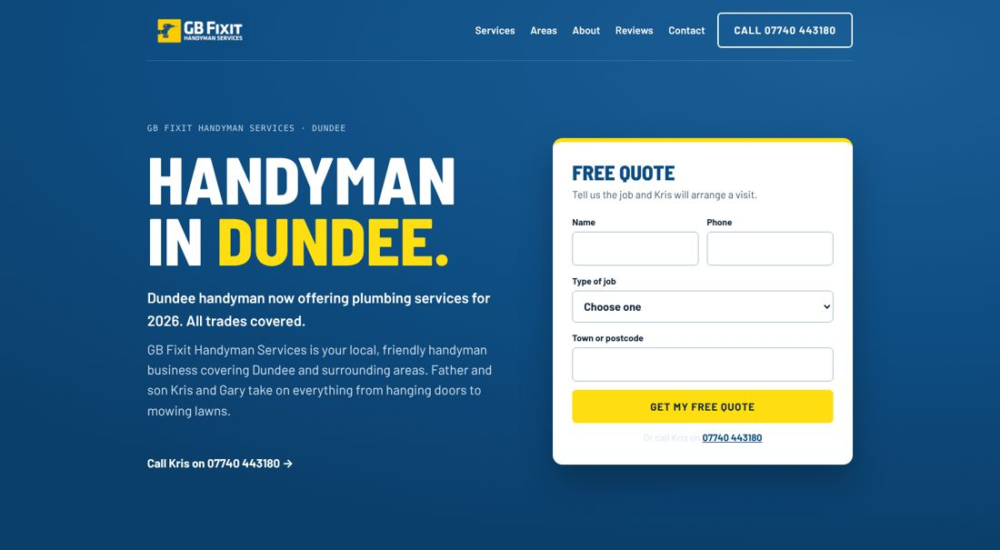</div>
      <div class="sec-body">
        <div>
          <h4>Layout &amp; settings</h4>
          <ul>
            <li><b>Header:</b> background navy <code>#0E4D82</code>, a thin line under it at 16% white. Logo left (about 58px tall). Menu right in white, Barlow Bold 15px. Then an outline button "Call 07740 443180" linking to <code>tel:+447740443180</code>.</li>
            <li><b>Strip:</b> navy <code>#0E4D82</code>. Optional: a gradient fill from <code>#1A5E96</code> (top right) to <code>#0B3F6B</code> (bottom left) for the soft glow.</li>
            <li><b>Two columns:</b> text on the left (about 55%), the quote card on the right (about 45%).</li>
            <li><b>Headline:</b> "HANDYMAN IN" white, "DUNDEE." in yellow <code>#FFDE11</code>. Highlight the word and change its colour in the text box.</li>
            <li><b>Quote card:</b> a white box with corner radius 14px and a soft shadow. Put a 6px yellow bar along its top edge (a yellow rectangle shape placed on top), then add a <b>Wix Form</b> inside.</li>
            <li><b>Form fields:</b> Name, Phone (side by side), Type of job (dropdown), Town or postcode. Submit button: yellow, full width, "Get my free quote".</li>
            <li><b>Form settings:</b> send notifications to Kris's email. Set the thank-you message (below).</li>
          </ul>
          <p class="mob"><b>On mobile:</b> the text comes first, then the form card full width. Headline about 44px.</p>
        </div>
        <div>
          <h4>Wording to paste</h4>
          <div class="copy"><span class="k">Small label</span><span class="t">GB Fixit Handyman Services · Dundee</span><button type="button">Copy</button></div>
          <div class="copy"><span class="k">Headline (H1)</span><span class="t">Handyman in Dundee.</span><button type="button">Copy</button></div>
          <div class="copy"><span class="k">Intro (bold)</span><span class="t">Dundee handyman now offering plumbing services for 2026. All trades covered.</span><button type="button">Copy</button></div>
          <div class="copy"><span class="k">Body</span><span class="t">GB Fixit Handyman Services is your local, friendly handyman business covering Dundee and surrounding areas. Father and son Kris and Gary take on everything from hanging doors to mowing lawns.</span><button type="button">Copy</button></div>
          <div class="copy"><span class="k">Link under the intro</span><span class="t">Call Kris on 07740 443180 →</span><button type="button">Copy</button></div>
          <div class="copy"><span class="k">Form heading + line</span><span class="t">Free quote
Tell us the job and Kris will arrange a visit.</span><button type="button">Copy</button></div>
          <div class="copy"><span class="k">Dropdown options</span><span class="t">Painting &amp; decorating
Joinery
Plumbing
Repairs &amp; maintenance
Fencing &amp; gates
Gardens
Landlord / letting agent
Other</span><button type="button">Copy</button></div>
          <div class="copy"><span class="k">Under the form</span><span class="t">Or call Kris on 07740 443180</span><button type="button">Copy</button></div>
          <div class="copy"><span class="k">Thank-you message</span><span class="t">Thanks, we've got your message. Kris will be in touch to arrange a visit.</span><button type="button">Copy</button></div>
        </div>
      </div>
    </article>

    <!-- strip -->
    <article class="sec" id="s-strip">
      <div class="sec-head"><h3>2 · Project photo strip</h3><span class="label">Strip · Pale blue #EEF4FA</span></div>
      <div class="shot">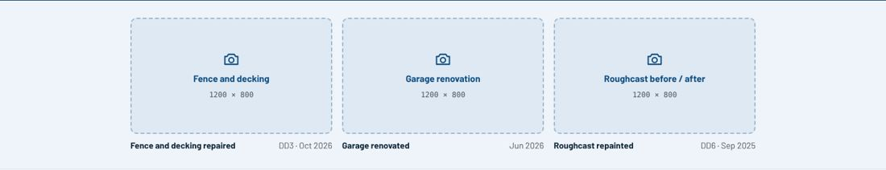</div>
      <div class="sec-body">
        <div>
          <h4>Layout &amp; settings</h4>
          <ul>
            <li>Strip background pale blue <code>#EEF4FA</code> with a 1px <code>#DCE5EE</code> line along the bottom. Top and bottom padding about 28px.</li>
            <li>Three equal columns. Each has a photo (1200 × 800, corner radius 10px, about 190px tall), with the job in bold and the area and date on the right underneath.</li>
            <li>Use real job photos. Before/after pairs work well here.</li>
          </ul>
          <p class="mob"><b>On mobile:</b> one photo per row.</p>
        </div>
        <div>
          <h4>Captions</h4>
          <div class="copy"><span class="k">Photo 1</span><span class="t">Fence and decking repaired · DD3 · Oct 2026</span><button type="button">Copy</button></div>
          <div class="copy"><span class="k">Photo 2</span><span class="t">Garage renovated · Jun 2026</span><button type="button">Copy</button></div>
          <div class="copy"><span class="k">Photo 3</span><span class="t">Roughcast repainted · DD6 · Sep 2025</span><button type="button">Copy</button></div>
        </div>
      </div>
    </article>

    <!-- services -->
    <article class="sec" id="s-services">
      <div class="sec-head"><h3>3 · Services: Inside, Outside, Rentals</h3><span class="label">Strip · Page grey #F6F8FA</span></div>
      <div class="shot">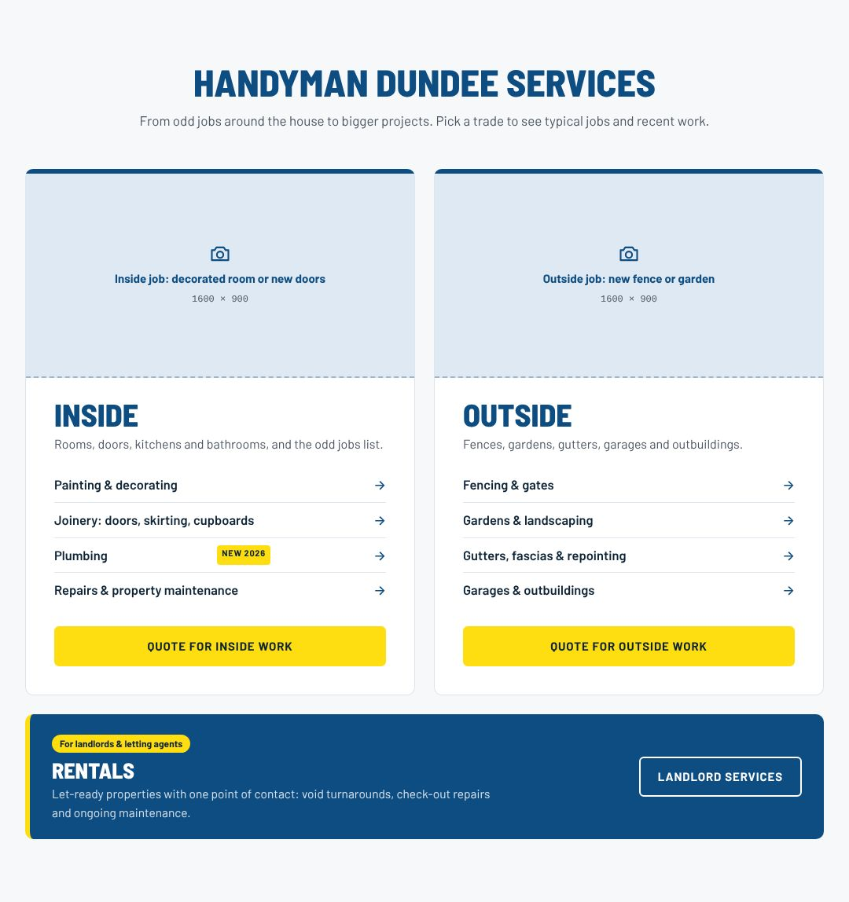</div>
      <div class="sec-body">
        <div>
          <h4>Layout &amp; settings</h4>
          <ul>
            <li><b>Heading</b> centred, navy, 48px, with the line underneath in slate.</li>
            <li><b>Two equal cards</b> side by side, 24px apart: white box, 1px <code>#DCE5EE</code> border, corner radius 10px, and a 6px navy bar along the top.</li>
            <li>In each card: a photo across the top (1600 × 900, about 260px tall), the heading (40px, navy), one line of slate text, four links, then a full-width yellow button.</li>
            <li><b>Links:</b> one per row, Barlow SemiBold 16px, a thin divider between rows and a navy "→" at the right end. Each links to its page (table below).</li>
            <li>Put a small yellow "NEW 2026" tag beside Plumbing.</li>
            <li><b>Rentals:</b> a navy <code>#0E4D82</code> box under both cards, full width, radius 10px, with a 6px yellow bar on its left edge. Inside: a yellow pill tag, the heading (28px, white), one line in light blue <code>#D6E2EE</code>, and a white outline button on the right.</li>
          </ul>
          <p class="mob"><b>On mobile:</b> Inside, then Outside, then Rentals, stacked. The Rentals button goes full width under its text.</p>
        </div>
        <div>
          <h4>Wording &amp; links</h4>
          <div class="copy"><span class="k">Section heading (H2)</span><span class="t">Handyman Dundee services</span><button type="button">Copy</button></div>
          <div class="copy"><span class="k">Line under it</span><span class="t">From odd jobs around the house to bigger projects. Pick a trade to see typical jobs and recent work.</span><button type="button">Copy</button></div>
          <div class="copy"><span class="k">Inside card</span><span class="t">Inside
Rooms, doors, kitchens and bathrooms, and the odd jobs list.
Painting &amp; decorating → /painters-decorators-dundee
Joinery: doors, skirting, cupboards → /joiner-dundee
Plumbing (NEW 2026) → /plumber-dundee
Repairs &amp; property maintenance → /property-maintenance-dundee
Button: Quote for inside work → the quote form</span><button type="button">Copy</button></div>
          <div class="copy"><span class="k">Outside card</span><span class="t">Outside
Fences, gardens, gutters, garages and outbuildings.
Fencing &amp; gates → /fencing-dundee
Gardens &amp; landscaping → /gardener-dundee
Gutters, fascias &amp; repointing → /property-maintenance-dundee
Garages &amp; outbuildings → /joiner-dundee
Button: Quote for outside work → the quote form</span><button type="button">Copy</button></div>
          <div class="copy"><span class="k">Rentals strip</span><span class="t">Tag: For landlords &amp; letting agents
Rentals
Let-ready properties with one point of contact: void turnarounds, check-out repairs and ongoing maintenance.
Button: Landlord services → /landlord-property-maintenance-dundee</span><button type="button">Copy</button></div>
          <p class="mob"><b>Quote buttons:</b> link them to the hero form with Wix's <b>Anchor</b> link (add an anchor at the top of the hero strip).</p>
        </div>
      </div>
    </article>

    <!-- reviews -->
    <article class="sec" id="s-reviews">
      <div class="sec-head"><h3>4 · Reviews strip</h3><span class="label">Strip · Mid blue #2B6CA3</span></div>
      <div class="shot">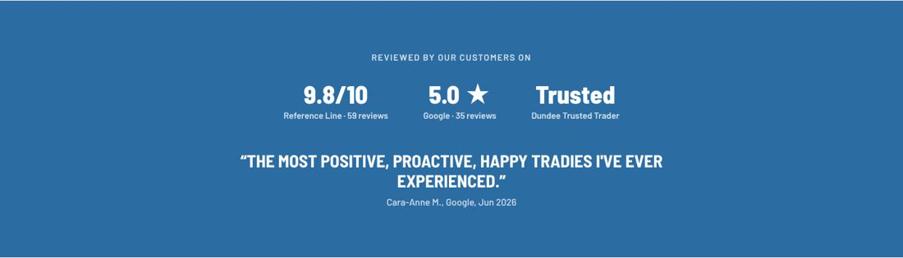</div>
      <div class="sec-body">
        <div>
          <h4>Layout &amp; settings</h4>
          <ul>
            <li>Strip mid blue <code>#2B6CA3</code>, everything centred, padding about 80px top and bottom.</li>
            <li>A small caps label in light blue <code>#D6E2EE</code>, then three figures side by side: Barlow Semi Condensed ExtraBold 40px white, with a 14px label under each.</li>
            <li>Then the quote: Barlow Semi Condensed Bold 28px, ALL CAPS, white, followed by the name and date at 15px.</li>
            <li>Optional: make "9.8/10" link to the Reference Line profile and "5.0 ★" to the Google reviews.</li>
          </ul>
          <p class="mob"><b>On mobile:</b> the figures wrap to two rows. Quote about 22px.</p>
        </div>
        <div>
          <h4>Wording to paste</h4>
          <div class="copy"><span class="k">Label</span><span class="t">Reviewed by our customers on</span><button type="button">Copy</button></div>
          <div class="copy"><span class="k">Figures</span><span class="t">9.8/10 · Reference Line · 59 reviews
5.0 ★ · Google · 35 reviews
Trusted · Dundee Trusted Trader</span><button type="button">Copy</button></div>
          <div class="copy"><span class="k">Quote</span><span class="t">“The most positive, proactive, happy tradies I've ever experienced.”
Cara-Anne M., Google, Jun 2026</span><button type="button">Copy</button></div>
          <p class="mob"><b>Check before launch:</b> refresh the review counts, and confirm Kris and Gary are happy quoting reviewers by first name and initial.</p>
        </div>
      </div>
    </article>

    <!-- video -->
    <article class="sec" id="s-video">
      <div class="sec-head"><h3>5 · Cartoon video</h3><span class="label">Strip · White</span></div>
      <div class="shot">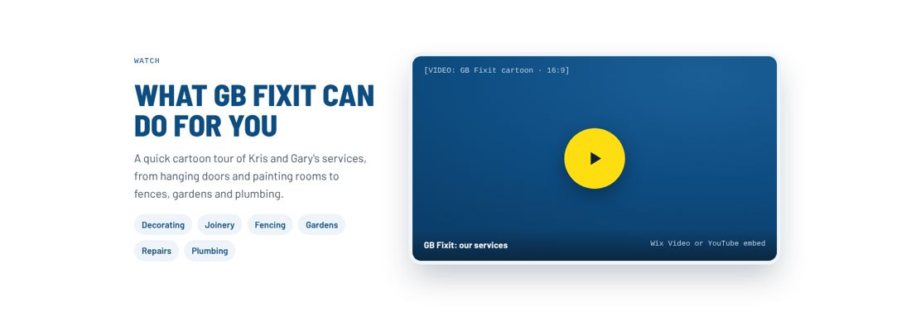</div>
      <div class="sec-body">
        <div>
          <h4>Layout &amp; settings</h4>
          <ul>
            <li>Two columns: text on the left (about 40%), the video on the right (about 60%).</li>
            <li>Video: <b>Add → Video &amp; Music → Wix Video</b>, upload the cartoon, size 16:9, corner radius 14px.</li>
            <li>Choose a <b>cover image</b>: a clear frame from the cartoon, ideally showing the logo.</li>
            <li>Turn autoplay off, so it plays only when tapped. Add captions if it has a voiceover.</li>
            <li>Tags: small pale-blue <code>#EEF4FA</code> pills with navy text, made as buttons with fully rounded corners and no link.</li>
          </ul>
          <p class="mob"><b>On mobile:</b> the text comes first, then the video full width.</p>
        </div>
        <div>
          <h4>Wording to paste</h4>
          <div class="copy"><span class="k">Small label</span><span class="t">Watch</span><button type="button">Copy</button></div>
          <div class="copy"><span class="k">Heading (H2)</span><span class="t">What GB Fixit can do for you</span><button type="button">Copy</button></div>
          <div class="copy"><span class="k">Body</span><span class="t">A quick cartoon tour of Kris and Gary's services, from hanging doors and painting rooms to fences, gardens and plumbing.</span><button type="button">Copy</button></div>
          <div class="copy"><span class="k">Tags</span><span class="t">Decorating · Joinery · Fencing · Gardens · Repairs · Plumbing</span><button type="button">Copy</button></div>
        </div>
      </div>
    </article>

    <!-- meet -->
    <article class="sec" id="s-meet">
      <div class="sec-head"><h3>6 · Meet Kris and Gary</h3><span class="label">Strip · Pale blue #EEF4FA</span></div>
      <div class="shot">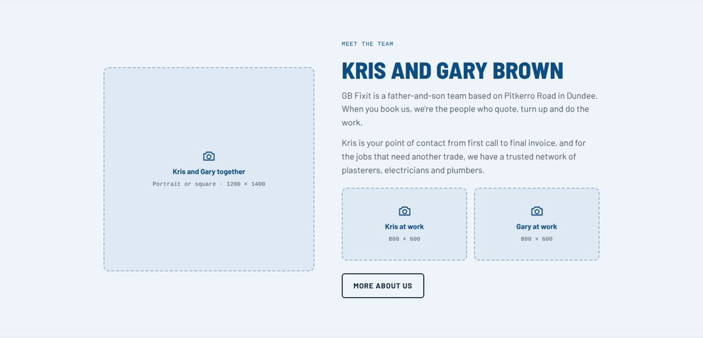</div>
      <div class="sec-body">
        <div>
          <h4>Layout &amp; settings</h4>
          <ul>
            <li>Strip pale blue <code>#EEF4FA</code>, with thin <code>#DCE5EE</code> lines top and bottom.</li>
            <li>Left: a large photo of Kris and Gary together (portrait or square, about 1200 × 1400, radius 10px).</li>
            <li>Right: a small label, the heading, two short paragraphs, two smaller photos side by side ("Kris at work", "Gary at work", about 800 × 600), and a navy outline button.</li>
          </ul>
          <p class="mob"><b>On mobile:</b> photo first, then the text, then the two small photos side by side.</p>
        </div>
        <div>
          <h4>Wording to paste</h4>
          <div class="copy"><span class="k">Small label</span><span class="t">Meet the team</span><button type="button">Copy</button></div>
          <div class="copy"><span class="k">Heading (H2)</span><span class="t">Kris and Gary Brown</span><button type="button">Copy</button></div>
          <div class="copy"><span class="k">Paragraph 1</span><span class="t">GB Fixit is a father-and-son team based on Pitkerro Road in Dundee. When you book us, we're the people who quote, turn up and do the work.</span><button type="button">Copy</button></div>
          <div class="copy"><span class="k">Paragraph 2</span><span class="t">Kris is your point of contact from first call to final invoice, and for the jobs that need another trade, we have a trusted network of plasterers, electricians and plumbers.</span><button type="button">Copy</button></div>
          <div class="copy"><span class="k">Button</span><span class="t">More about us → /about</span><button type="button">Copy</button></div>
        </div>
      </div>
    </article>

    <!-- how we work -->
    <article class="sec" id="s-how">
      <div class="sec-head"><h3>7 · How we work (three points)</h3><span class="label">Strip · Pale blue #EEF4FA</span></div>
      <div class="shot">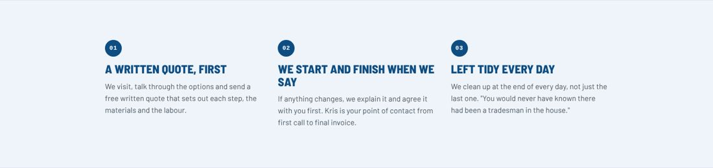</div>
      <div class="sec-body">
        <div>
          <h4>Layout &amp; settings</h4>
          <ul>
            <li>Three equal columns. Each has a navy circle (34px) with the number in white, a heading in navy (Barlow Semi Condensed ExtraBold 24px, ALL CAPS) and a short slate paragraph.</li>
            <li>These are the real steps of a job, in order, so keep the numbers.</li>
          </ul>
          <p class="mob"><b>On mobile:</b> one point per row.</p>
        </div>
        <div>
          <h4>Wording to paste</h4>
          <div class="copy"><span class="k">01</span><span class="t">A written quote, first
We visit, talk through the options and send a free written quote that sets out each step, the materials and the labour.</span><button type="button">Copy</button></div>
          <div class="copy"><span class="k">02</span><span class="t">We start and finish when we say
If anything changes, we explain it and agree it with you first. Kris is your point of contact from first call to final invoice.</span><button type="button">Copy</button></div>
          <div class="copy"><span class="k">03</span><span class="t">Left tidy every day
We clean up at the end of every day, not just the last one. "You would never have known there had been a tradesman in the house."</span><button type="button">Copy</button></div>
        </div>
      </div>
    </article>

    <!-- areas + closing + footer -->
    <article class="sec" id="s-close">
      <div class="sec-head"><h3>8 · Areas, closing band, footer</h3><span class="label">Strips · Grey, deep navy, footer navy</span></div>
      <div class="shot">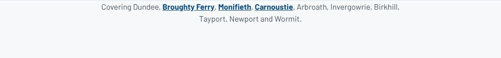</div>
      <div class="shot" style="padding-top:0">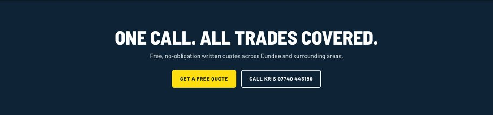</div>
      <div class="sec-body">
        <div>
          <h4>Layout &amp; settings</h4>
          <ul>
            <li><b>Areas:</b> one centred line on the page grey. Link the three town names to their area pages.</li>
            <li><b>Closing band:</b> strip deep navy <code>#0E2436</code>, centred: heading in white at 56px, one line, then a yellow button and a white outline button side by side.</li>
            <li><b>Footer:</b> strip <code>#0B1D30</code>, one centred line of light text (<code>#A9BED2</code>) with links.</li>
          </ul>
          <p class="mob"><b>On mobile:</b> the closing buttons stack full width.</p>
        </div>
        <div>
          <h4>Wording to paste</h4>
          <div class="copy"><span class="k">Areas line</span><span class="t">Covering Dundee, Broughty Ferry, Monifieth, Carnoustie, Arbroath, Invergowrie, Birkhill, Tayport, Newport and Wormit.</span><button type="button">Copy</button></div>
          <div class="copy"><span class="k">Closing band</span><span class="t">One call. All trades covered.
Free, no-obligation written quotes across Dundee and surrounding areas.
Buttons: Get a free quote → /contact · Call Kris 07740 443180 → tel:+447740443180</span><button type="button">Copy</button></div>
          <div class="copy"><span class="k">Footer</span><span class="t">© 2026 GB Fixit Handyman Services · 32 Pitkerro Road, Dundee DD4 7EG · About · Reviews · Contact</span><button type="button">Copy</button></div>
          <p class="mob"><b>Check:</b> the site footer says DD4 7EG but Google says DD4 7ED. Confirm the right postcode.</p>
        </div>
      </div>
    </article>
  </section>

  <!-- 05 -->
  <section class="step" id="mobile">
    <header><span class="n">05</span><h2>Mobile view</h2></header>
    <p>Wix keeps a separate mobile layout. Switch to <b>Mobile</b> in the top bar and go through each strip. Most of the work is stacking columns into one and making buttons full width.</p>
    <div class="mobpair">
      <figure>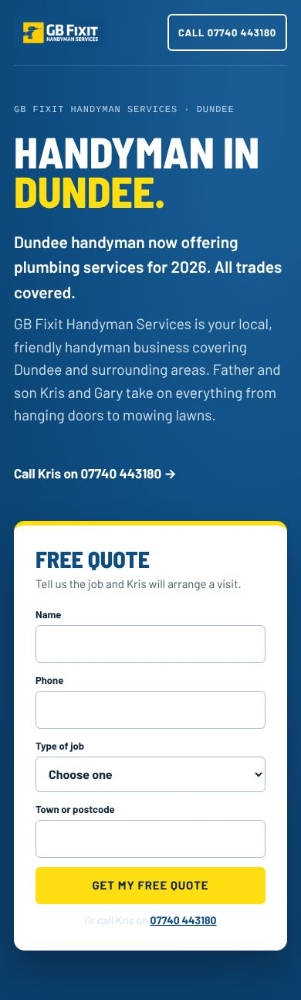<figcaption>Hero on a phone</figcaption></figure>
      <figure>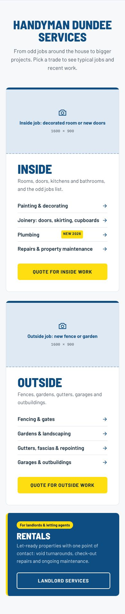<figcaption>Services on a phone</figcaption></figure>
    </div>
    <ul class="do">
      <li>Headline about 44px, section headings about 34px.</li>
      <li>Hide the header menu links and use Wix's mobile <b>menu button</b>. Keep the "Call" button visible.</li>
      <li>Optional: add a <b>Quick Action Bar</b> (Mobile Tools) with Call and Email, so Kris's number is always one tap away.</li>
      <li>Check that the quote form's fields are easy to tap (at least 44px tall).</li>
    </ul>
  </section>

  <!-- 06 -->
  <section class="step" id="live">
    <header><span class="n">06</span><h2>Go-live checklist</h2></header>
    <p>Tick these off when the new page is ready. Ticks are saved in your browser only.</p>
    <ul class="check" id="checklist">
      <li><label><input type="checkbox" id="c1"><span>Send a test enquiry through the form and check it reaches Kris's email.</span></label></li>
      <li><label><input type="checkbox" id="c2"><span>Every service and area link opens the right page.</span></label></li>
      <li><label><input type="checkbox" id="c3"><span>Phone number taps to call on a phone.</span></label></li>
      <li><label><input type="checkbox" id="c4"><span>All photo spaces have real photos, with alt text describing the job and town (e.g. "New fence and gate, Broughty Ferry").</span></label></li>
      <li><label><input type="checkbox" id="c5"><span>Video plays, has a cover image and doesn't autoplay.</span></label></li>
      <li><label><input type="checkbox" id="c6"><span>Set "Home (new)" as the homepage.</span></label></li>
      <li><label><input type="checkbox" id="c7"><span>Homepage SEO title set to: Handyman Dundee | GB Fixit Handyman Services</span></label></li>
      <li><label><input type="checkbox" id="c8"><span>Homepage SEO description set (text below).</span></label></li>
      <li><label><input type="checkbox" id="c9"><span>Old home page and /copy-of-home deleted; add a 301 redirect for any old page address that's changing.</span></label></li>
      <li><label><input type="checkbox" id="c10"><span>Checked on a real phone in Mobile view.</span></label></li>
      <li><label><input type="checkbox" id="c11"><span>Published, then checked gbfixit.co.uk in a private browser window.</span></label></li>
    </ul>
    <div class="copy" style="margin-top:16px"><span class="k">Homepage SEO title</span><span class="t">Handyman Dundee | GB Fixit Handyman Services</span><button type="button">Copy</button></div>
    <div class="copy"><span class="k">Homepage SEO description</span><span class="t">Local, friendly handyman in Dundee covering Dundee and surrounding areas. Kris and Gary at GB Fixit do everything from hanging doors to mowing lawns, and now plumbing. Free quotes.</span><button type="button">Copy</button></div>
  </section>
</main>

<script>
document.querySelectorAll('.copy button').forEach(function (btn) {
  btn.addEventListener('click', function () {
    var text = btn.parentElement.querySelector('.t').textContent;
    function done(label) { btn.textContent = label; setTimeout(function () { btn.textContent = 'Copy'; }, 1400); }
    function selectIt() {
      var range = document.createRange(); range.selectNodeContents(btn.parentElement.querySelector('.t'));
      var sel = window.getSelection(); sel.removeAllRanges(); sel.addRange(range); done('Selected');
    }
    try {
      navigator.clipboard.writeText(text).then(function () { done('Copied'); }, selectIt);
    } catch (e) { selectIt(); }
  });
});
(function () {
  var KEY = 'gbfixit-build-guide-c-checks';
  var saved = {};
  try { saved = JSON.parse(localStorage.getItem(KEY) || '{}'); } catch (e) { saved = {}; }
  document.querySelectorAll('#checklist input').forEach(function (box) {
    if (saved[box.id]) box.checked = true;
    box.addEventListener('change', function () {
      saved[box.id] = box.checked;
      try { localStorage.setItem(KEY, JSON.stringify(saved)); } catch (e) {}
    });
  });
})();
</script>
